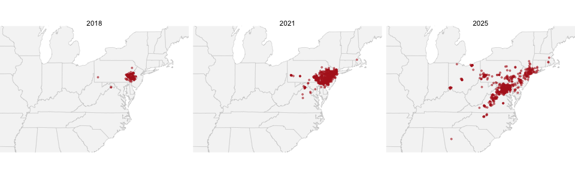
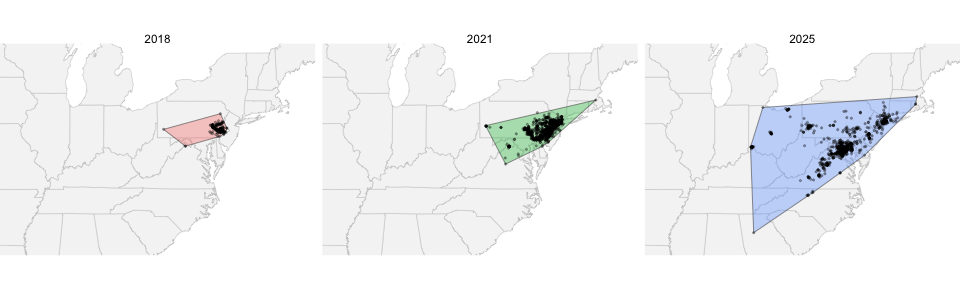
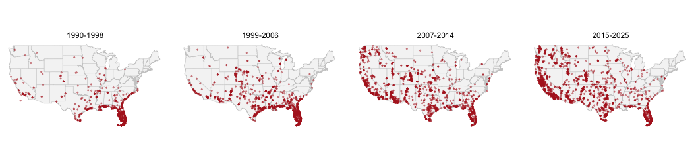
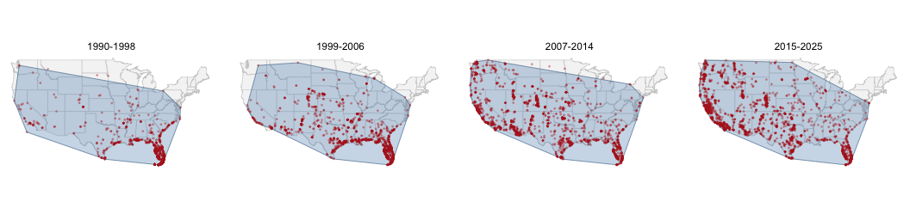
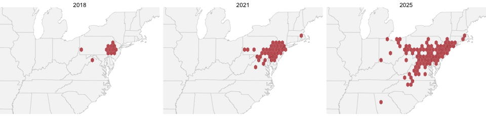
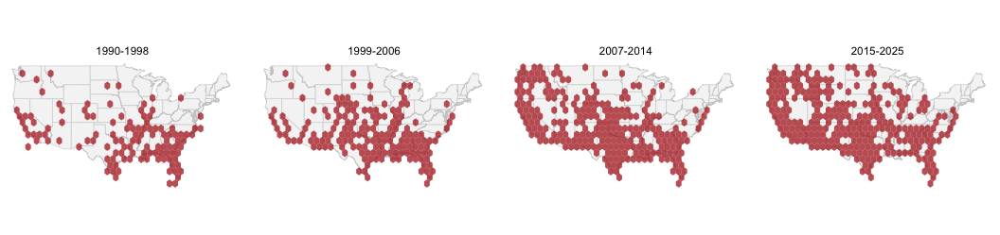
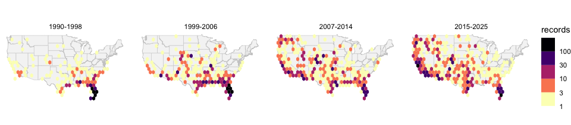
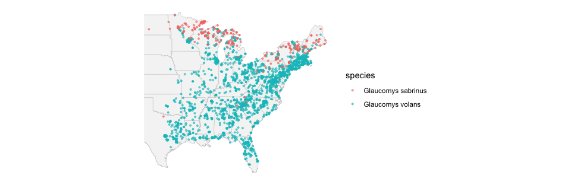
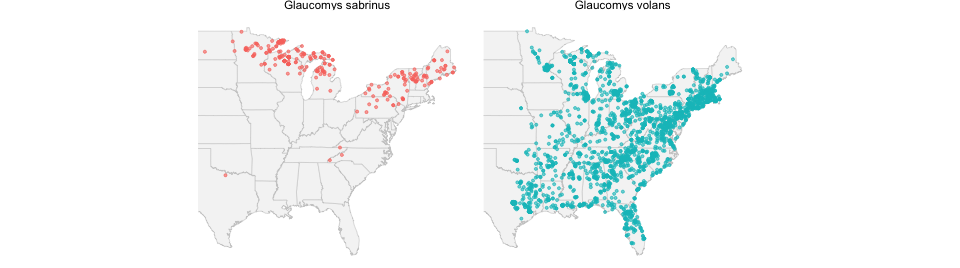

# Load packages ---------------------------------------
library(tidyverse)
library(sf) # spatial data frames
library(maps) # ready-made outlines
library(rgbif) # species records from GBIF
library(plotly) # interactive plots
# One download per snapshot year ----------------------
slf_2018 <- occ_data(scientificName = "Lycorma delicatula", country = "US",
hasCoordinate = TRUE, year = 2018, limit = 1500)$data
slf_2021 <- occ_data(scientificName = "Lycorma delicatula", country = "US",
hasCoordinate = TRUE, year = 2021, limit = 1500)$data
slf_2025 <- occ_data(scientificName = "Lycorma delicatula", country = "US",
hasCoordinate = TRUE, year = 2025, limit = 1500)$dataLecture — Mapping Redux: Ranges That Move
Time on a map, convex hulls, hex grids, and an interactive map with ggplotly
maps
sf
spatial
gbif
ggplotly
plotly
invasive species
A second pass at mapping. Instead of one species at one moment, we put TIME on the map: spotted lanternfly records from three snapshot years, faceted side by side. Then we turn a cloud of dots into a range two ways — a convex hull and a hex grid — see where each one lies to us, map two species at once, and finish with an interactive ggplotly map that has a period slider.
Where We Left Off — Mapping
st_as_sf()turned latitude/longitude into ageometrycolumngeom_sf()drew a basemap, then points on top of itrgbifdownloaded real occurrence records for any species on Earth- And the whole time one question kept coming back: is this a map of the species, or a map of the people looking for it?
Note
✅ Transition
Today that question gets a sharper edge. Every map last time was one species, one moment. Today we put time on the map — and ask whether a species’ range is moving. 🪰🕊️
Goals for Today
- Download records snapshot year by snapshot year, and understand why that matters
- Put time on a map with
facet_wrap() - Turn a cloud of dots into a range two ways:
- a convex hull — the classic GIS answer
- a hex grid — the honest one
- Map two species at once
- Make it interactive with
ggplotly()— hover, zoom, and a period slider
Tools today:
tidyverse,sf,maps,rgbifplotly— install this
Species:
- 🪰 Spotted lanternfly — live from GBIF
- 🕊️ Eurasian collared-dove — from a cached file
- 🐿️ Two flying squirrels — on one map
Tip
Four chunks: time → hulls → hexagons → interactive.
How to Use These Slides
Four short chunks. After each one you switch to the activity and run the code yourself.
Like last time, every line is already written for you. Your job is to run it, read it, and break it on purpose.
Important
⚠️ Install first
install.packages("plotly")
Note
The homework is a separate file
18_mapping_redux_homework.R. A species you pick, across time.
🧩 Chunk 1 of 4 · Putting Time on a Map
We will cover: why limit ruins a time series, how to dodge it, and facet_wrap() on a map.
A Species That Moved — While You Were in High School
The spotted lanternfly, Lycorma delicatula:
- Native to China; arrived on a stone shipment
- First found in Berks County, Pennsylvania, in 2014
- Feeds on grape, hops, maple, and tree-of-heaven
- Now reported from more than a dozen states
So there is a real, documented answer to “where was it, and when?” — which makes it the perfect species to test our maps against.
Note
📖 Why this one
Most range shifts are slow and arguable. This one is fast, recent, and well documented — so when the map says something, we can check it.
The Trap: limit Is a Cutoff
Last time we learned limit is not a random sample — it is the first n records GBIF hands back.
That was a footnote then. Today it is fatal:
# DO NOT DO THIS
occ_data(scientificName = "Lycorma delicatula",
country = "US", limit = 3000)$dataAsk for 3,000 records spanning 2014–2025 and nearly all of them come back from the last year or two. Facet that by year and most panels are empty.
Warning
⚠️ The fix
Ask for one year at a time. Three separate downloads, each capped on its own, then stack them.
Every year gets its own fair share.
Three Snapshot Years
- Same call three times — only
yearchanges limit = 1500is a ceiling, not a target: 2018 will come back far smaller
Stack Them with bind_rows()
# Stack the three years, keep five columns ----------
slf_df <- bind_rows(slf_2018, slf_2021, slf_2025) %>%
select(species,
state = stateProvince,
year,
longitude = decimalLongitude,
latitude = decimalLatitude) %>%
filter(!is.na(longitude), !is.na(latitude))
count(slf_df, year)# A tibble: 3 × 2
year n
<int> <int>
1 2018 187
2 2021 1500
3 2025 1500bind_rows()stacks data frames that share column namesselect()renames while it selects:state = stateProvince- Look at those counts. One year hit the ceiling, one did not
What the Counts Already Tell You
# A tibble: 3 × 2
year n
<int> <int>
1 2018 187
2 2021 1500
3 2025 1500- 2018 is the whole year — every US record GBIF holds
- 2025 is capped at 1,500 of roughly 21,000
- So the panels are not equal effort, and never will be
Warning
⚠️ Say this out loud
More dots in 2025 does not prove more lanternflies. It proves more records.
What is fair to compare is where the dots are — the shape, not the count.
Make It Spatial — Same Recipe as Last Time
# lon/lat -> geometry -------------------------------
slf_sf <- slf_df %>%
st_as_sf(coords = c("longitude", "latitude"),
crs = 4326)
# Basemap: the lower 48 -----------------------------
states_sf <- st_as_sf(
maps::map("state", plot = FALSE, fill = TRUE)
) %>%
st_set_crs(4326)- Nothing new here — this is the Bigfoot recipe
- Longitude first, still
4326is plain degrees, still
Time on the Map — facet_wrap()
ggplot() +
geom_sf(data = states_sf, fill = "grey96", color = "grey80") +
geom_sf(data = slf_sf, color = "firebrick", size = 0.7, alpha = 0.5) +
coord_sf(xlim = c(-92, -69), ylim = c(33, 45)) +
facet_wrap(~ year) +
theme_void()
One Line Did All the Work
facet_wrap(~ year) is the only new line on that plot.
- It is the same faceting you used on penguins and leaves
- A map is just a plot — so faceting works on it unchanged
- Three panels, one shared basemap, one shared scale
This is called a small multiple, and it is the most honest way to show change: everything is held constant except the one thing you are comparing.
Note
🤔 Think
An animation shows you one frame at a time and asks you to remember the last one.
Small multiples put them side by side so you can look instead.
🛑 Pause — Do Activity Parts 1–4 Now
Download the three snapshot years, stack them, and facet the map. Then come back.
🧩 Chunk 2 of 4 · From Dots to a Range
We will cover: the convex hull — what it is, and the day it lies to you.
Tip
🖐 After this chunk: Activity Parts 5–7.
A Range Is Not a Pile of Dots
Dots are where somebody looked and found one.
A range is the area the species occupies — the thing the dots are evidence for.
Turning one into the other is a choice, and every choice has a bias baked in. The two most common:
- Convex hull — stretch a rubber band around all the points
- Occupancy grid — chop the region into cells, mark the ones with records
Note
📖 Vocabulary
Convex hull: the smallest convex polygon containing every point. “Convex” means it never dents inward.
Two Lines for a Hull
# One hull per year ---------------------------------
slf_hulls <- slf_sf %>%
group_by(year) %>%
summarise(geometry = st_union(geometry)) %>%
st_convex_hull()
slf_hullsSimple feature collection with 3 features and 1 field
Geometry type: POLYGON
Dimension: XY
Bounding box: xmin: -84.66884 ymin: 33.80251 xmax: -71.19838 ymax: 42.29703
Geodetic CRS: WGS 84
# A tibble: 3 × 2
year geometry
* <int> <POLYGON [°]>
1 2018 ((-80.01461 40.2528, -78.26258 39.20456, -75.53615 39.80…
2 2021 ((-80.05158 40.48407, -78.44238 38.08717, -75.5278 39.18…
3 2025 ((-84.66884 39.15189, -84.41604 33.80251, -80.03148 36.1…group_by()thensummarise()— the same verbs you already knowst_union()glues one year’s points into a single multipointst_convex_hull()wraps the rubber band around it- Out comes one polygon per year
The Hull, Drawn
ggplot() +
geom_sf(data = states_sf, fill = "grey96", color = "grey80") +
geom_sf(data = slf_hulls, aes(fill = factor(year)), alpha = 0.35, color = "grey30") +
geom_sf(data = slf_sf, size = 0.4, alpha = 0.3) +
coord_sf(xlim = c(-92, -69), ylim = c(33, 45)) +
facet_wrap(~ year) +
theme_void() +
theme(legend.position = "none")
You Can Put a Number on It
# Hull area in square kilometres --------------------
slf_hulls %>%
mutate(area_km2 = as.numeric(st_area(geometry)) / 1e6) %>%
st_drop_geometry()# A tibble: 3 × 2
year area_km2
* <int> <dbl>
1 2018 53696.
2 2021 135344.
3 2025 569578.st_area()measures a polygon — in square metres, so divide by a millionst_drop_geometry()throws the geometry away and leaves a plain table- Now “the range grew” is a number, not an impression
Now Watch It Fail
The Eurasian collared-dove, Streptopelia decaocto:
- Escaped a pet shop in the Bahamas in the 1970s
- Reached Florida in the early 1980s
- Crossed the entire continent in about 30 years
This is the textbook invasion. If a hull can show a spreading range, it should be unmissable here.
The file is already in your data/ folder — one record set per year from 1990 to 2025.
Note
📖 Why a cached file
Thirty-six separate downloads, one per year, would eat the class period. We ran them for you with a loop — the script is in scripts/.
Load the Dove and Cut It into Periods
# Read the cached records ---------------------------
dove_df <- read_csv("data/collared_dove_gbif.csv")
# Four periods ---------------------------------------
dove_df <- dove_df %>%
mutate(period = case_when(
year <= 1998 ~ "1990-1998",
year <= 2006 ~ "1999-2006",
year <= 2014 ~ "2007-2014",
TRUE ~ "2015-2025"))
count(dove_df, period)# A tibble: 4 × 2
period n
<chr> <int>
1 1990-1998 1574
2 1999-2006 2000
3 2007-2014 1996
4 2015-2025 2746case_when()from the factors module, doing exactly what it did there- Periods instead of single years, because one year of 1990s bird records is thin
- The periods are ordered alphabetically on their own — that is why they are named this way
The Dove’s Dots Tell the Story
dove_sf <- dove_df %>%
st_as_sf(coords = c("longitude", "latitude"), crs = 4326)
ggplot() +
geom_sf(data = states_sf, fill = "grey96", color = "grey80") +
geom_sf(data = dove_sf, color = "firebrick", size = 0.4, alpha = 0.4) +
coord_sf(xlim = c(-125, -66), ylim = c(24, 50)) +
facet_wrap(~ period, nrow = 1) +
theme_void()
The Dove’s Hull Does Not
dove_hulls <- dove_sf %>%
group_by(period) %>%
summarise(geometry = st_union(geometry)) %>%
st_convex_hull()
ggplot() +
geom_sf(data = states_sf, fill = "grey96", color = "grey80") +
geom_sf(data = dove_hulls, fill = "steelblue", alpha = 0.3, color = "steelblue4") +
geom_sf(data = dove_sf, color = "firebrick", size = 0.3, alpha = 0.3) +
coord_sf(xlim = c(-125, -66), ylim = c(24, 50)) +
facet_wrap(~ period, nrow = 1) +
theme_void()
Why the Hull Broke
Look at the first panel. The dots are a tight knot in Florida. The hull covers most of the country.
A handful of records in California and Washington — escapes, misidentifications, or genuinely early arrivals — drag the rubber band across two thousand miles of empty ground.
- A convex hull is set by its outermost points only
- Every point inside it is ignored
- So one bad record redraws the whole range
Warning
⚠️ The rule
A convex hull answers “how far apart are the extremes?”
It does not answer “where does this species live?” — and those are not the same question.
🛑 Pause — Do Activity Parts 5–7 Now
Build the lanternfly hulls, measure them, then build the dove hulls and watch them fail.
🧩 Chunk 3 of 4 · Hexagons — the Honest Range
We will cover: st_make_grid(), a spatial join, and counting records per cell.
Tip
🖐 After this chunk: Activity Parts 8–10.
The Idea in One Sentence
Chop the region into equal cells, then count how many records fall in each one.
- A cell with records is occupied
- A cell with none stays empty — and stays empty on the map
- One stray record lights up one cell, not a whole state
So the measure of a range becomes how many cells are occupied — which no single outlier can inflate.
Note
📖 Why hexagons?
Squares have neighbours at two distances — edge and corner. Hexagons have six neighbours all the same distance away, so spread looks the same in every direction.
Build the Grid
# A rectangle over the eastern US -------------------
east_box <- st_bbox(c(xmin = -92, xmax = -69,
ymin = 33, ymax = 45),
crs = 4326) %>%
st_as_sfc()
# Tile it with hexagons -----------------------------
hex_grid <- st_make_grid(east_box,
cellsize = 0.5,
square = FALSE) %>%
st_as_sf() %>%
mutate(hex_id = row_number())
nrow(hex_grid)[1] 1377st_bbox()+st_as_sfc()make a plain rectanglesquare = FALSEis what turns squares into hexagonscellsize = 0.5is half a degree — about 55 kmhex_idgives every cell a name so we can join to it
Which Hexagon Is Each Record In?
# A spatial join: point -> containing hexagon -------
slf_hex_counts <- st_join(slf_sf, hex_grid) %>%
st_drop_geometry() %>%
count(year, hex_id, name = "records")
head(slf_hex_counts)# A tibble: 6 × 3
year hex_id records
<int> <int> <int>
1 2018 705 1
2 2018 805 2
3 2018 937 29
4 2018 951 4
5 2018 952 3
6 2018 966 40st_join()isleft_join()with geometry as the key- No
by =argument — the key is “is this point inside that polygon?” - Then
count()— the samecount()you have used all semester - One row per year per occupied cell
Join the Counts Back onto the Hexagons
# Keep only the cells that have records -------------
slf_hex_map <- hex_grid %>%
inner_join(slf_hex_counts, by = "hex_id")
# How much ground is occupied, by year? -------------
slf_hex_map %>%
st_drop_geometry() %>%
count(year, name = "occupied_hexes") year occupied_hexes
1 2018 13
2 2021 39
3 2025 90inner_join()— the ordinary join from two weeks agoinner_joindrops the empty cells, which is exactly what we want- That last table is the headline number: occupied cells per year
The Hex Map — Occupied, or Not
ggplot() +
geom_sf(data = states_sf, fill = "grey96", color = "grey80") +
geom_sf(data = slf_hex_map, fill = "firebrick", alpha = 0.75, color = NA) +
coord_sf(xlim = c(-92, -69), ylim = c(33, 45)) +
facet_wrap(~ year) +
theme_void()
- One flat colour, on purpose: a cell is drawn if it holds at least one record, so the map shows exactly what
occupied_hexescounts — and nothing else
Hull Versus Hexagons
| Convex hull | Hex grid | |
|---|---|---|
| Built from | outermost points | every point |
| One stray record | redraws the range | lights one cell |
| Holes in the range | invisible | visible |
| Gives you a number | area | occupied cells |
| Lines of code | 2 | 5 |
Note
🤔 So why ever use a hull?
Because sometimes the extremes are the question — how far north has it got, how far has the front moved. Hulls answer that in two lines.
Use the hull to describe the edge. Use hexagons to describe the range.
The Dove, in Hexagons
# A coarser grid, because this one covers the country
us_box <- st_as_sfc(st_bbox(c(xmin = -125, xmax = -66, ymin = 24, ymax = 50), crs = 4326))
us_hex <- st_make_grid(us_box, cellsize = 1.5, square = FALSE) %>%
st_as_sf() %>%
mutate(hex_id = row_number())
dove_hex_map <- us_hex %>%
inner_join(st_join(dove_sf, us_hex) %>%
st_drop_geometry() %>%
count(period, hex_id, name = "records"),
by = "hex_id")
ggplot() +
geom_sf(data = states_sf, fill = "grey96", color = "grey80") +
geom_sf(data = dove_hex_map, fill = "firebrick", alpha = 0.75, color = NA) +
coord_sf(xlim = c(-125, -66), ylim = c(24, 50)) +
facet_wrap(~ period, nrow = 1) +
theme_void()
The Number the Hull Could Not Give You
dove_hex_map %>%
st_drop_geometry() %>%
count(period, name = "occupied_hexes") period occupied_hexes
1 1990-1998 116
2 1999-2006 166
3 2007-2014 241
4 2015-2025 267- The hulls were four near-identical blobs — no signal at all
- The hexes climb steadily, period after period
- Same data. Same four panels. One summary could see it and one could not.
What If We Colour by Record Count?
ggplot() +
geom_sf(data = states_sf, fill = "grey96", color = "grey80") +
geom_sf(data = dove_hex_map, aes(fill = records), color = NA) +
scale_fill_viridis_b(option = "magma", direction = -1, breaks = c(1, 3, 10, 30, 100)) +
coord_sf(xlim = c(-125, -66), ylim = c(24, 50)) +
facet_wrap(~ period, nrow = 1) +
theme_void()
scale_fill_viridis_b()— thebis for binned, andbreakssets the classes- A smooth
_c()ramp fails here: 104 of 116 cells would share one pale shade
Bright Means People, Not Doves
The darkest cell on the whole figure sits in the first panel — 344 records in one hexagon over Miami.
| period | occupied cells | busiest cell |
|---|---|---|
| 1990-1998 | 116 | 344 |
| 1999-2006 | 166 | 201 |
| 2007-2014 | 241 | 75 |
| 2015-2025 | 267 | 123 |
The range more than doubles while the busiest cell shrinks.
Warning
⚠️ Two different maps
Occupied cells map where the species is.
Record counts map where the observers are — retirees with binoculars in Florida, students with phones in Philadelphia.
Colour by count when effort is the thing you mean to show. Never as a stand-in for abundance.
🛑 Pause — Do Activity Parts 8–10 Now
Build the grid, join the points to it, count, and map it. Then do the same for the dove.
🧩 Chunk 4 of 4 · Two Species, and Making It Interactive
We will cover: more than one species on a map, and ggplotly().
Tip
🖐 After this chunk: Activity Parts 11–13.
Two Species on One Map
The two North American flying squirrels:
- Southern flying squirrel, Glaucomys volans — oak and hickory forest
- Northern flying squirrel, Glaucomys sabrinus — spruce and fir
They meet in a narrow band across the upper Midwest and New England — right over the top of Duluth — and where they meet, the southern one carries a parasite that kills the northern one.
Mapping them together is the only way to see that band.
Note the map below is cropped to the East: the northern flying squirrel has a second population down the Pacific coast that would otherwise sit far off to the left.
Warning
⚠️ Why not over time?
About 9,000 and 5,700 US records, across 35 years. Slice that by period and the panels are too thin to trust.
Not every question your data suggests is one your data can answer.
color = species — That Is the Whole Trick
squirrel_df <- read_csv("data/flying_squirrels_gbif.csv")
squirrel_sf <- squirrel_df %>%
st_as_sf(coords = c("longitude", "latitude"), crs = 4326)
ggplot() +
geom_sf(data = states_sf, fill = "grey96", color = "grey80") +
geom_sf(data = squirrel_sf, aes(color = species), size = 0.7, alpha = 0.6) +
coord_sf(xlim = c(-100, -66), ylim = c(25, 50)) +
theme_void()
Same Data, Side by Side
ggplot() +
geom_sf(data = states_sf, fill = "grey96", color = "grey80") +
geom_sf(data = squirrel_sf, aes(color = species), size = 0.7, alpha = 0.6) +
coord_sf(xlim = c(-100, -66), ylim = c(25, 50)) +
facet_wrap(~ species) +
theme_void() +
theme(legend.position = "none")
- Overlaid is better for finding the contact zone — you need them on top of each other to see it
- Faceted is better for seeing each range on its own
- Make both. They answer different questions.
Making It Interactive — ggplotly()
ggplotly() takes a ggplot you already built and hands back a web plot: hover, zoom, pan.
One catch on maps. ggplotly() does not understand geom_sf() well — it ignores custom hover text and sometimes forgets your coord_sf() limits.
So for the interactive version we go back to plain longitude and latitude columns:
geom_polygon()for the basemapgeom_point()for the records
Note
📖 map_data()
map_data("state") is the same state outlines as maps::map(), handed back as an ordinary data frame with long, lat, and group columns.
group keeps Michigan’s two peninsulas from being joined by a stray line.
The Interactive Map
# Basemap as a plain data frame ---------------------
states_df <- map_data("state")
slf_gg <- ggplot() +
geom_polygon(data = states_df,
aes(long, lat, group = group),
fill = "grey96", color = "grey80") +
geom_point(data = slf_df,
aes(longitude, latitude,
color = factor(year),
text = paste0(state, " ", year)),
size = 1, alpha = 0.6) +
coord_fixed(1.3, xlim = c(-92, -69),
ylim = c(33, 45)) +
theme_void()
ggplotly(slf_gg, tooltip = "text")text =is not a real ggplot aesthetic — ggplot warns and ignores itggplotly()picks it up anyway, andtooltip = "text"says to show only thatcoord_fixed(1.3)keeps the country from looking squashed —coord_sf()would do it properly, but we are off thesfpath here
The Cheap Animation — frame =
slf_anim <- ggplot() +
geom_polygon(data = states_df,
aes(long, lat, group = group),
fill = "grey96", color = "grey80") +
geom_point(data = slf_df,
aes(longitude, latitude,
frame = factor(year),
text = paste0(state, " ", year)),
color = "firebrick", size = 1, alpha = 0.6) +
coord_fixed(1.3, xlim = c(-92, -69),
ylim = c(33, 45)) +
theme_void()
ggplotly(slf_anim, tooltip = "text")frame = factor(year)is the only changeggplotly()turns it into a play button and a slider- Three frames, not three hundred — it is three scatterplots, so it runs on any laptop
Warning
⚠️ ggplot warns “Ignoring unknown aesthetics: frame and text”. That warning is expected. It is plotly, not ggplot, that uses them.
What You Can Do Now
- Download records year by year so a time series is not a lie
- Put time on a map with
facet_wrap() - Turn dots into a range with
st_convex_hull()— and know when it is lying - Build a hex grid,
st_join()points to it, and count - Report a range as occupied cells — a number an outlier cannot inflate
- Shade a grid by occupancy for range, by count only when effort is the point
- Map two species at once, overlaid and faceted
- Hand any of it to
ggplotly()for hover, zoom, and a period slider
Note
🤔 The question that never goes away
Every map today got denser over time. Some of that is the species spreading.
Some of it is more people with phones.
The lanternfly and the dove are clear enough to survive that. Most species are not — and the honest answer is sometimes “this data cannot tell you.”
Homework
18_mapping_redux_homework.R — that file is what you turn in.
- Pick one species across time: Virginia opossum and giant swallowtail come cached, or download your own year by year
- Facet it by period
- Build a hull and a hex grid, and say which one you believe
- Report occupied hexes per period
- Then answer the hard one: is your species moving, or are there just more observers?
Tip
📂 In your data/ folder
collared_dove_gbif.csvflying_squirrels_gbif.csvopossum_gbif.csvgiant_swallowtail_gbif.csvspotted_lanternfly_gbif.csv— the cached copy, in case the live download fails
Next Time
- Your final project data, on your own map, with your own question